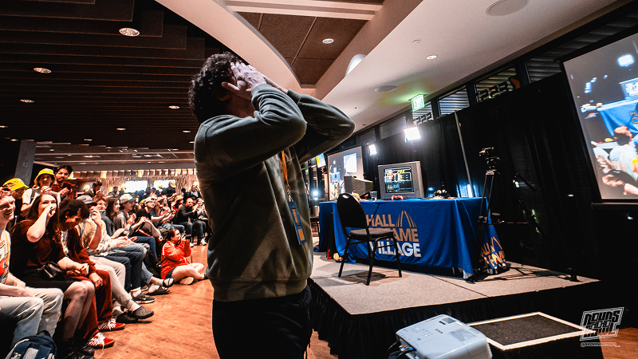
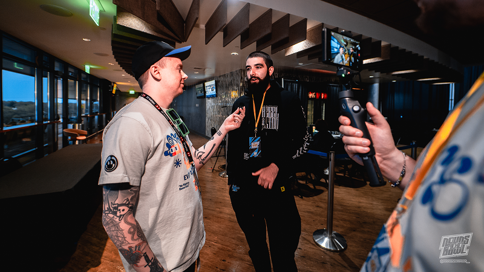
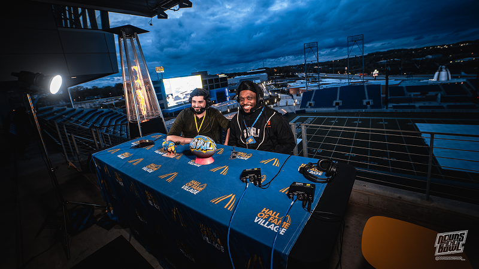

PRODUCING NOUNS BOWL
AT HALL OF FAME VILLAGE
Delivering a grassroots esports broadcast at scale—bridging community competition with professional production infrastructure.

Delivering a grassroots esports broadcast at scale—bridging community competition with professional production infrastructure.
Digital Forge Media was engaged to produce the live broadcast for the Nouns Bowl, a grassroots esports event hosted at Hall of Fame Village in Canton, Ohio—home of the Pro Football Hall of Fame.
What began as a broadcast engagement quickly expanded into a broader production role, requiring coordination across charity partners, third-party vendors, and the venue’s internal operations teams.
• Partnered directly with Hall of Fame Village to integrate broadcast systems into a large-scale venue environment
• Coordinated with multiple external vendors and charity stakeholders to ensure seamless production execution
• Engineered full venue-wide audio and video distribution across multiple viewing points
• Routed gameplay and broadcast feeds to jumbotrons and campus-wide displays, including visibility from surrounding roadways
• Adapted modern broadcast workflows to support Super Smash Bros. Melee, a legacy title not designed for large-scale production
Despite operating within a limited budget, the Nouns Bowl delivered a high-quality live experience that exceeded expectations for both attendees and viewers.
• Elevated a grassroots community event into a large-scale production environment
• Transformed a traditional sports venue into a fully connected esports broadcast space
• Delivered premium output under constraints, reinforcing adaptability across production scales
• Strengthened collaboration with venue teams, vendors, and community partners


